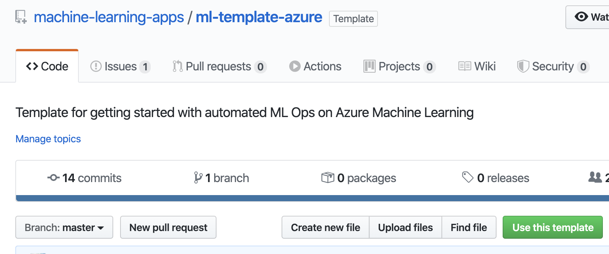

Some of our Contributors

Azure

Use actions to automate Data Science and Machine Learning Workflows. Check out the community built actions for ML Ops
The actions are modular and defined as part of a workflow in the .github/workflows directory of your repo.
Actions are available to help orchestrate training, testing and deploying Machine Learning models. We have curated a set of actions available for ML Operations.
Community FeaturedThe list of community actions is managed through the MLOps repo. Open an issue to propose a useful MLOps action or open a pull request to add your action to the list.
Templates are repositories that can be used as scaffolding for starting a project. The MLOps community has developed a multitude of these that allow you to get started on many different flavors of cloud. Head over to the Community Templates and choose from one of the tempates to get started.
Choose one of the templates and you will be directed to the template setup page.
Choose your repository name and you Select theme on the right.
Use the editor to update the
The list of community templates is managed through the MLOps repo. Open an issue to propose a useful MLOps template or open a pull request to add your action to the list.